سلسلات الرؤية والإضاءة
25 نصيحة بالصورة والشرح.

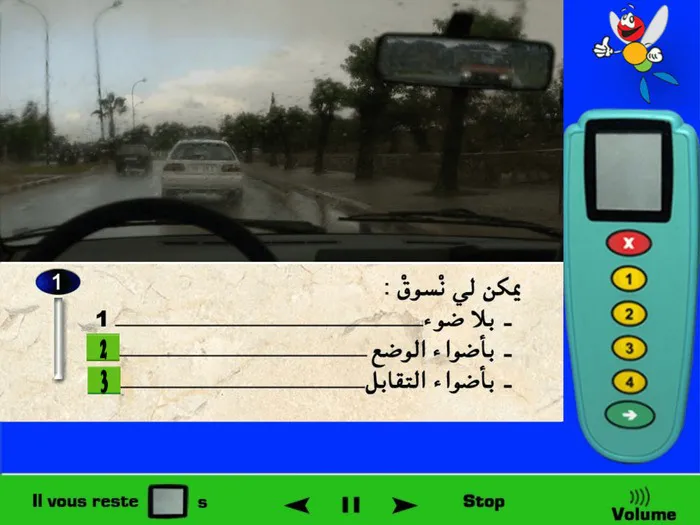
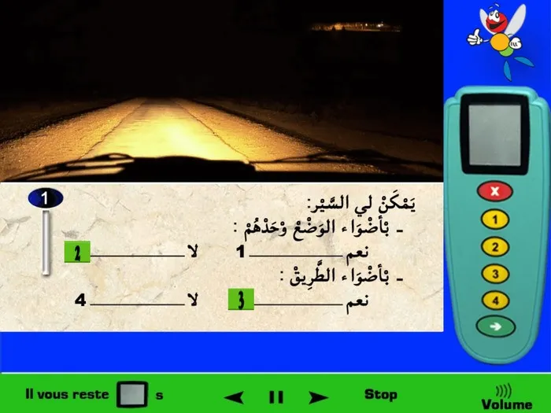
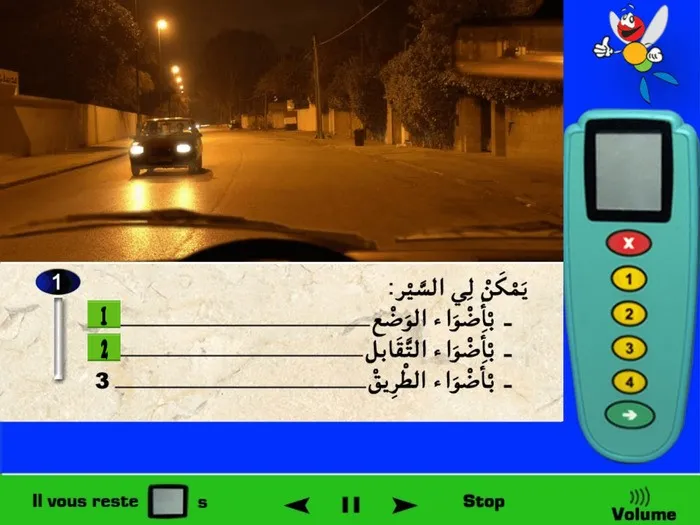
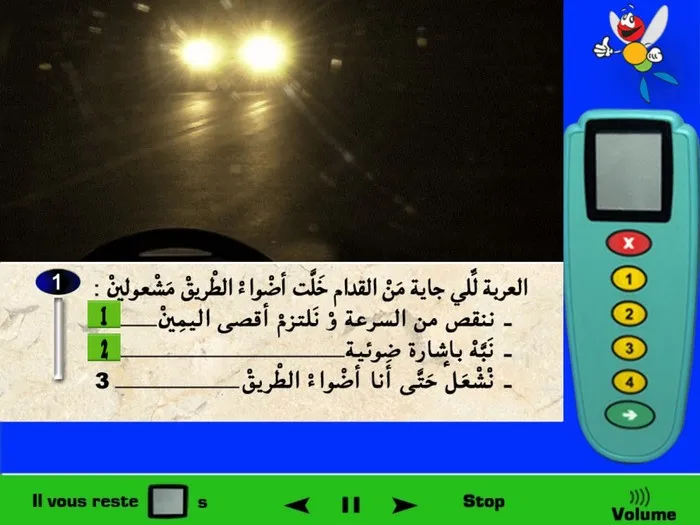
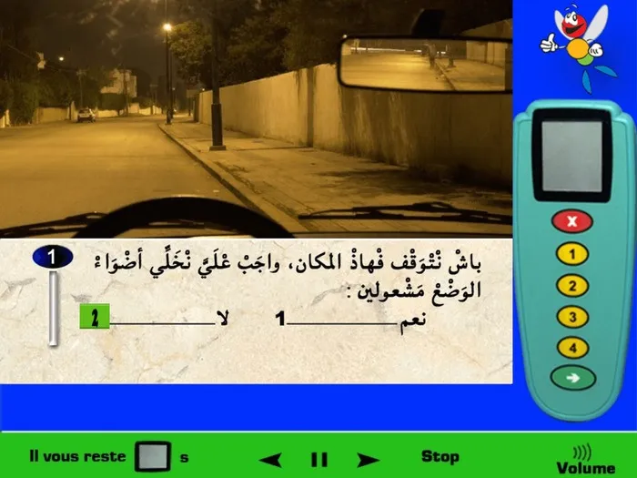
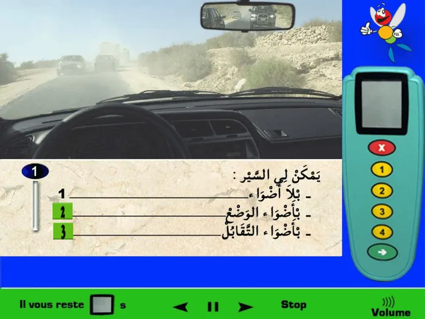
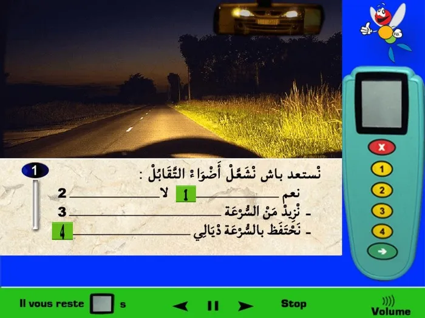

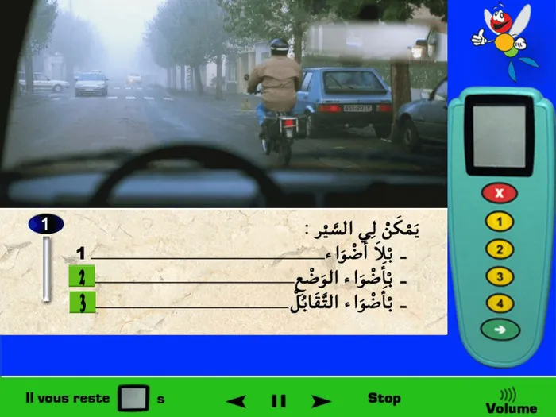
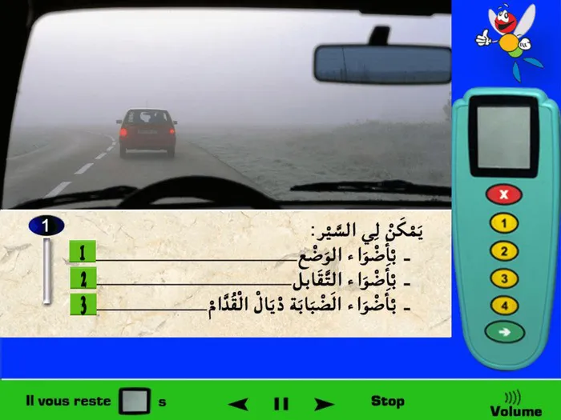
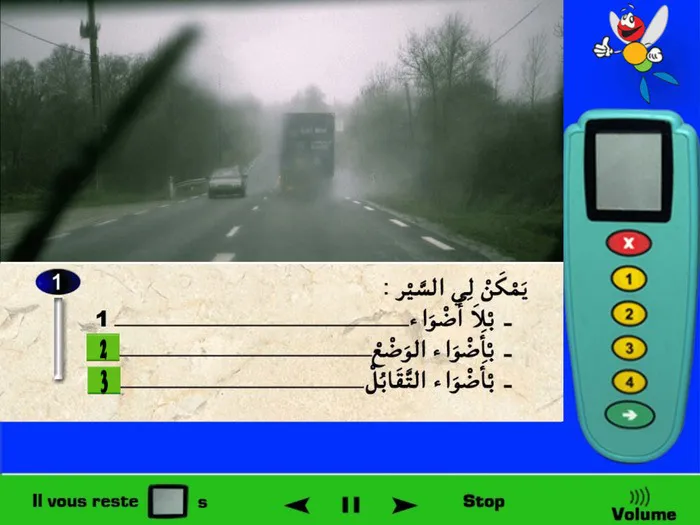
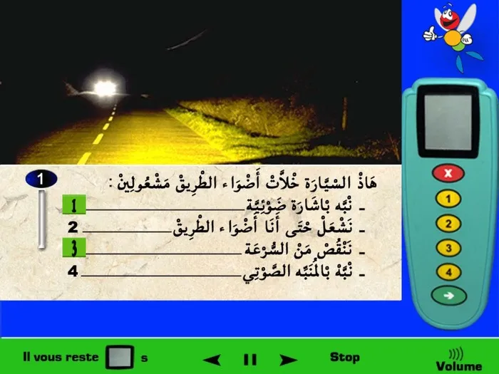
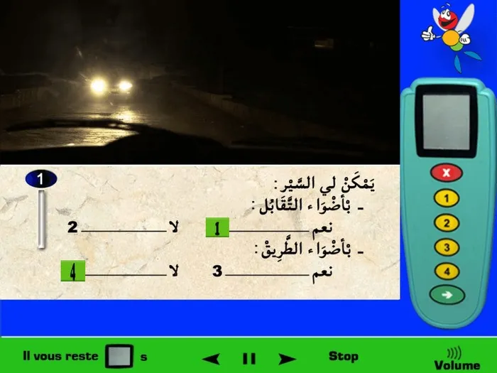
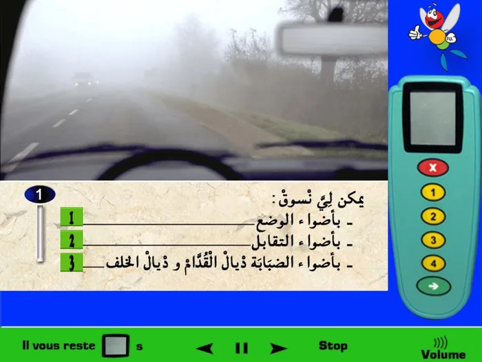
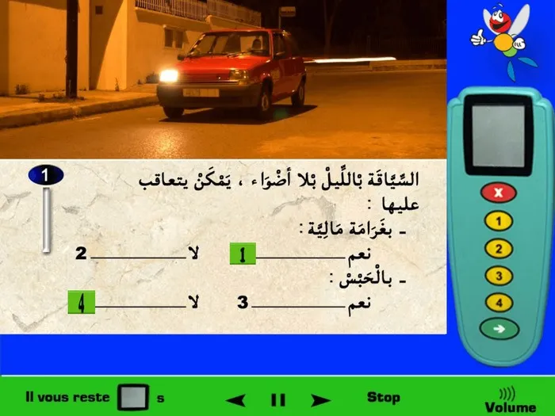
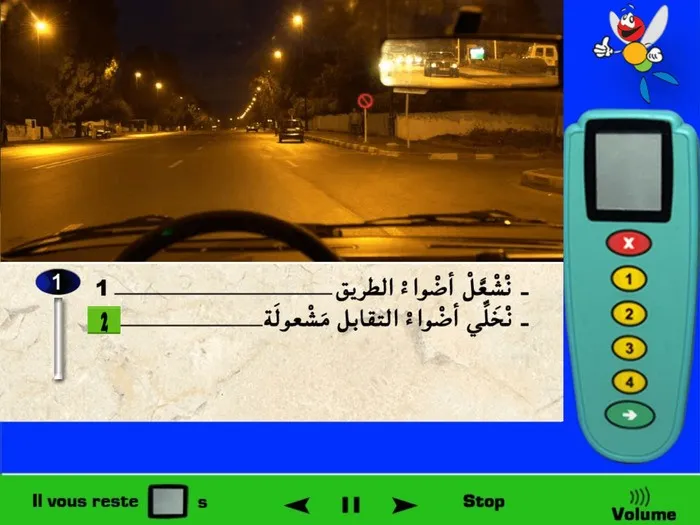
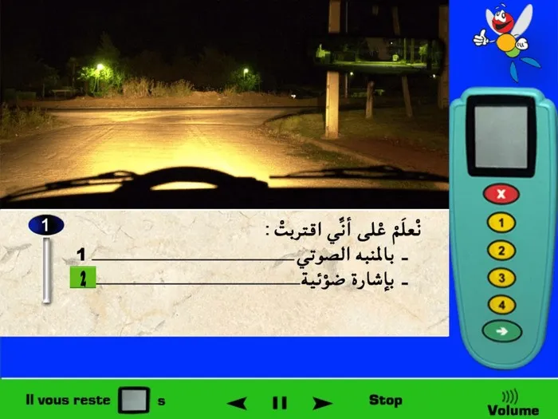
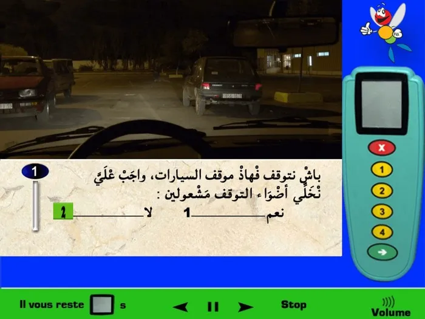
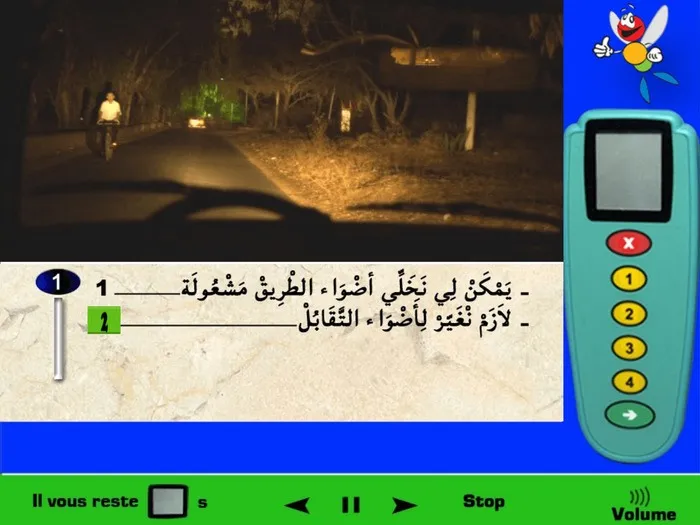
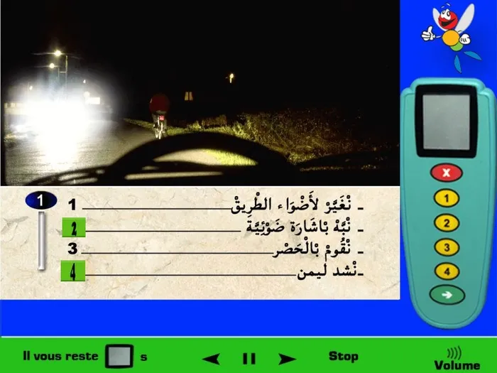
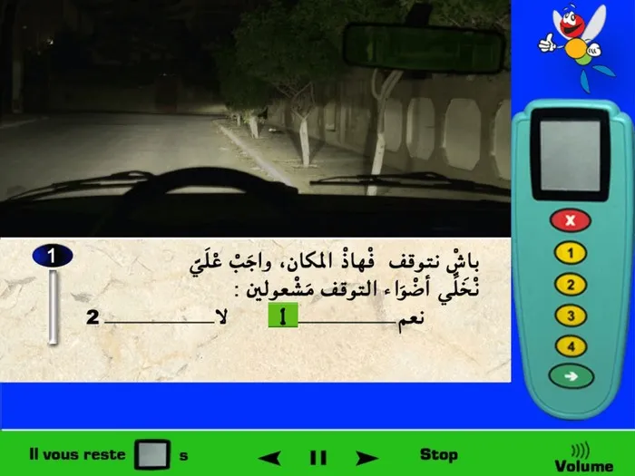
![في هذه الحالة الظاّهرة على الصورة وأثناء السّير فيمكنني السّير بأضواء الوضع لأننا نتواجد داخل المدينة وإنارات الشوارع مشتعلة وفي الفترة الليلية. وأيظا بالنسبة لأضواء التّقابل نقوم بإستعمالهم عندما نتواجد داخل المدينة وإنارات الشوارع مشتعلة وفي الفترة اللّيلية. (للتوضيح: أيظا يمكننا إستعمال أضواء التّقابل عندما تكون الحالة الجوّية صعبة، مثلا المطر أو الضباب أو الثلج، إلخ وكذلك عند الدّخول في نفق ... (بالنسبة لأضواء الطّريق فنستعملهم عندما نتواجد خارج المدينة وإنارة الشارع لا تشتغل ولا توجد عربات في الأمام). الإجابة الصحيحة 1 و 2.](../media/tips/08/23.webp)
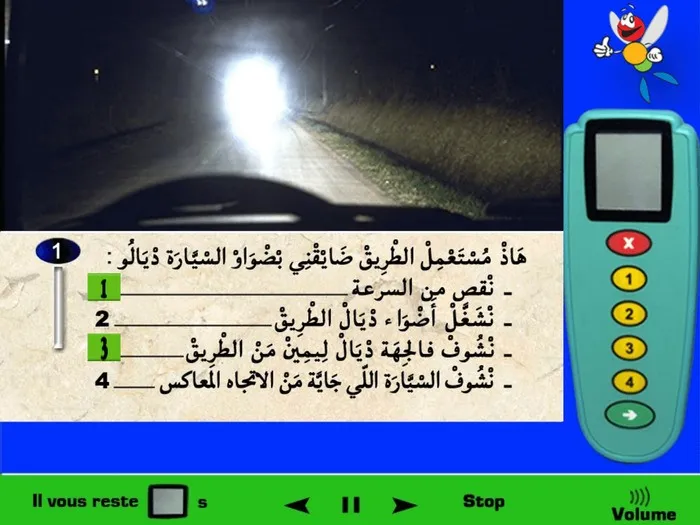
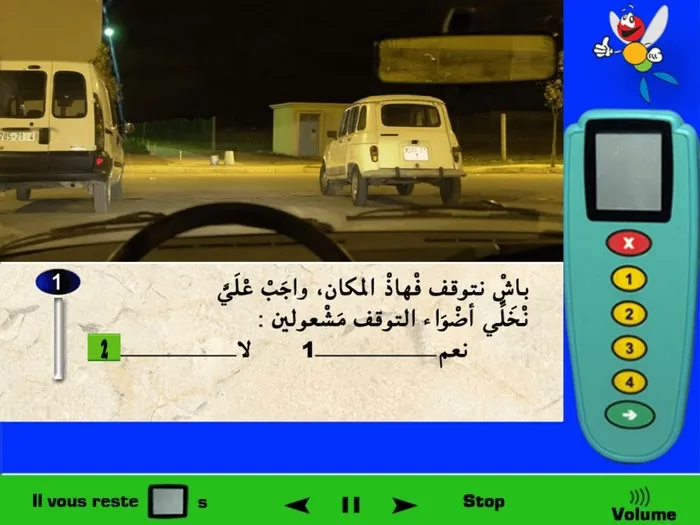